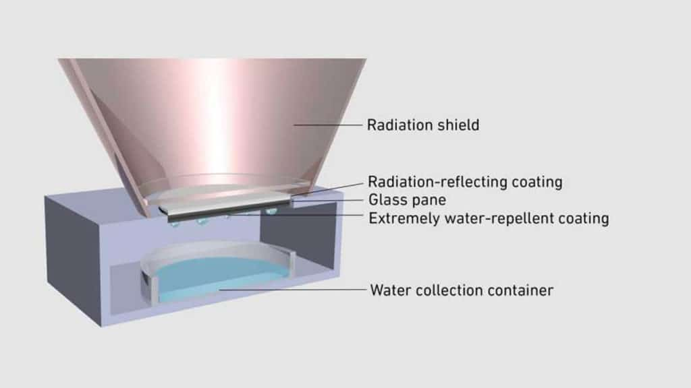

လက်ရှိ ကမ္ဘာပေါ်မှာ ရှိနေတဲ့ မြစ်ချောင်း အင်းအိုင် တွေထဲက ရေချိုတွေရဲ့ ပမာဏဟာ ကမ္ဘာ့ လူဦးရေ တစ်ရပ်လုံးအတွက် လုံလောက်တယ်လို့ ပြောလို့ ရပါတယ်။ ဒါပေမယ့် ပြဿနာက ဒီ ရေချိုက ကမ္ဘာတဝန်းမှာ ညီညီမျှမျှ ပြန့်နှံ့နေတာ မဟုတ်တာ ပါပဲ။ အချို့နေရာတွေမှာ ရေတွေ ပိုလျှံနေ ပေမယ့် အချို့နေရာ တွေကျတော့ ရေဟာ ရှားပါးပစ္စည်း ဖြစ်နေပါတယ်။
ဒီ ရေချို ရှားပါးတဲ့ ပြဿနာကို ပြေလည်အောင် အထောက်အကူ ပြုနိုင်ဖို့ ဆွစ်ဇာလန် နိုင်ငံ ဇူးရစ်မြို့က အင်ဂျင်နီယာ တွေဟာ လျှပ်စစ်စွမ်းအင် လုံးဝ မလိုပဲ လေထုထဲကနေ ရေချိုထုတ်ပေးနိုင်မယ့် ကိရိယာ တစ်ခုကို တည်ထွင် ခဲ့ပါတယ်။
လေထုထဲကနေ ရေချိုထုတ်တဲ့ အိုင်ဒီယာက အသစ်အဆန်းတော့ မဟုတ်ပါဘူး။ ဥပမာ ယူအေအီး နိုင်ငံက သိပ္ပံမြို့သစ် ဖြစ်တဲ့ မတ်စ်ဒါ မြို့သစ်မှာ လေထုထဲက သောက်ရေသန့်ထုတ် စက်တွေ တပ်ဆင်ဖို့ စီမံကိန်း ရေးဆွဲထားပါတယ်။ အပြည်ပြည် ဆိုင်ရာ အာကာသ စခန်းမှာလဲ ယာဉ်မှူးတွေရဲ့ ချွေးကနေ သောက်ရန် ပြန်ထုတ်ပါတယ်။
ကိုရီးယားက အင်ဂျင်နီယာ အဖွဲ့တစ်ခုကလဲ နေရောင်ခြည် စွမ်းအင်ကို အသုံးချပြီး ရေသန့်ထုတ်နိုင်မယ့် နည်းလမ်း တစ်ခုကို အဆိုပြုခဲ့ ကြပါသေးတယ်။
အခု တီထွင်တဲ့ ရေသန့်ထုတ် ကိရိယာ ကတော့ လေထုထဲက သောက်ရသန့်ကို တစ်နေ့ ၂၄ နာရီ ထုတ်ယူနိုင်မယ့် နည်းစနစ် ဖြစ်ပါတယ်။ ဒီ စနစ်ကို အသုံးပြုပြီး နေရောင် မရတဲ့ ညဖက်လို အချိန်မှာတောင် ပတ်ဝန်းကျင် လေထုထဲက အပူချိန်ကို အသုံးချပြီး ရေသန့် ထုတ်ပေးနိုင်စွမ်း ရှိပါတယ်။ နောက်ပြီး ဒီလို ထုတ်ပေးနိုင်ဖို့ ပြင်ပက လျှပ်စစ်စွမ်းအင်လဲ မလိုပါဘူး။ ဒါ့ကြောင့်မို့ ဒီစနစ်ဟာ လျှပ်စစ်ဓါတ်အား ပုံမှန် မရတဲ့ နေရာ ဒေသ တွေအထွက် အထူးပဲ သင့်လျှော်ပါတယ်။
ဒီကိိရိယာမှာ အဓိက ပါဝင်တဲ့ အစိတ်အပိုင်းကတော့ အထူး ပြုလုပ်ထားတဲ့ မှန်ချပ်ပဲ ဖြစ်ပါတယ်။ ဒီမှန်က ပြင်ပက နေကလာတဲ့ အပူ အတွင်းကို မဝင်အောင် တားဆီးပေးသလို အတွင်းက အပူကလဲ အပြင်ကို အလွယ်တကူ စိမ့်ထွက်သွားအောင် ပြုလုပ်ထားပါတယ်။ အတွင်းက အပူက မှန်ကတဆင့် အပြင်ကို ရောင်ခြည်ဖြာသလို ဖြာထွက်သွားတာမို့ ကိရိယာရဲ့ အတွင်းပိုင်းဟာ အပြင်ပိုင်းထက် ၁၅ ဒီဂရီ စင်တီဂရိတ် လောက် ပိုပြီး အေးနေပါတယ်။

အထူးမှန်ချပ်ကို ပိုလီမာ နဲ့ ငွေသတ္တု တွေနဲ့ ရောစပ်ထားတဲ့ ဆေးတစ်မျိုနဲ့ သုတ်လိမ်းထားပါတယ်။ ဒီ ဆေးက နေရောင်ကို ရောင်ပြန်ဟပ်ပေး ခြင်းအားဖြင့် အတွင်းကို အပူ မဝင်အောင် တားဆီးပေးတာပါ။ နောက်ပြီး ဒီ ဆေးက မှန်ကအပူကို အနီအောက် ရောင်ခြည် လှိုင်းခွင် တစ်ခုကနေ ပြင်ပကို ပြန့်သွားအောင် ပြုလုပ်ပေးပါတယ်။
နောက်ပြီး မှန်ရဲ့ အောက်ဖက်ကိုလဲ ရေမကပ်တဲ့ ဆေးတမျိုးနဲ့ အုပ်ထားပါ သေးတယ်။ ရလဒ်ကတော့ မှန်အောက်မှာ ငွေ့ရည်ဖွဲ့ပြီး သီးလာတဲ့ ရေစက်လေးတွေဟာ မှန်မှာ ကပ်မနေပဲ အောက်က ရေစုခွက် ထဲကို အလွယ်တကူ ပြုတ်ကျသွားတာပဲ ဖြစ်ပါတယ်။
ပြင်ပက အပူချိန် ကိရိယာ ထဲကို အလွယ်တကူ မဝင်နိုင်အောင်လဲ ကိရိယာရဲ့ အပေါ်ပိုင်း မှန်ပေါက်နေရာကို ကတော့ခွက် ကြီးနဲ့ကာထားပါသေးတယ်။ ဒီ ကတော့ခွက်က ပတ်ဝန်းကျင်က အပူလှိုင်းတွေ ကိရိယာ အတွင်းပိုင်းထဲ မဝင်အောင် ရောင်ပြန်ပေးပါတယ်။ နောက်ပြီး နေရောင်ကို လဲ ကာကွယ်ပေးပါတယ်။
ဒီ ကိရိယာကို လက်တွေ့ ပြင်ပမှာလဲ စမ်းသပ်မှုတွေ ပြုလုပ်ခဲ့ပါ သေးတယ်။ စမ်းသပ်မှု တွေအရ ဒီ ကိရိယာဟာ အလားတူ လေထဲက ရေထုတ်စက်တွေထွက် ထုတ်လုပ်နိုင် စွမ်းအား နှစ်ဆလောက်ထိ ပိုများတယ်လို့ သိရပါတယ်။
အသေးစား စမ်းသပ်မှု တစ်ခုမှာ ၁၀ စင်တီမီတာ (၄ လက်မ) အချင်းရှိတဲ့ မှန်တစ်ချပ် တပ်ဆင်ထားတဲ့ စံနစ် တစ်ခုဟာ တစ်ရက်ကို ရေ ၄.၆ မီလီ လီတာ (လက်ဖက်ရည်ဇွန်း တစ်ဇွန်းခန့်) ထုတ်လုပ်ပေးနိုင်ပါတယ်။ ဒါဟာ များလှတယ် ပြောလို့ မရပေမယ့် ၃ ပေလောက် အချင်းရှိတဲ့ မှန် တပ်ဆင်ထားတဲ့ ကိရိယာ တစ်ခုအတွက်ဆို တစ်ရက်ကို သောက်ရေသန့် လီတာ တစ်ဝက်ခန့်လောက် ထုတ်ပေးနိုင်တာမို့ ရေးရှားတဲ့ အရပ်ဒေသတွေ အတွက် နည်းလှတယ်လို့ ပြောလို့ မရပါဘူး။
အကယ်လို့များ ပတ်ဝန်းကျင် အခြေအနေတွေ ကောင်းမွန်မယ် ဆိုရင် ဒီ ကိရိယာ ကနေ တစ် စတုရန်း မီိတာ အရွယ် မှန်ချပ် တစ်ချပ်ဟာ တစ်နာရီကို ရေ ၅၀ စီစီ (တစ်ရက် ၆၀၀ စီစီ / ၀.၆ လီတာ) အထိ ထုတ်ပေးနိုင်မှာ ဖြစ်ပါတယ်။
ဒီပမာဏဟာ မများဘူး ဆိုပေမယ့် ဒီသောက်ရေ ပမာဏ ထုတ်ပေးဖို့ လျှပ်စစ်စွမ်းအင် လုံးဝ လိုအပ်ခြင်း မရှိဘူး ဆိုတာပါပဲ။ တနည်းပြောရရင် စက်ဖို့ပဲ ကုန်ကျမှာ ဖြစ်ပြီး နောက်ဆက်တွဲ လျှပ်စစ် ဓါတ်အားအတွက် ပေးရတဲ့ ကုန်ကျစားရိတ် ရှိမှာ မဟုတ်ပါဘူး။
လက်ရှိ အချိန်မှာတော့ ဒီစနစ်ကို စီးပွားဖြစ် ထုတ်လုပ် ရောင်းချဖို့ အစီအစဉ် မရှိသေးပါဘူး။ နောက် တဆင့် အနေနဲ့ ဒီ စနစ်ကို အခြား အလားတူ ရေသန့်ထုတ် စနစ်တွေနဲ့ ပူးတွဲ အသုံးချ နိုင်ခြင်း ရှိမရှိ ဆက်လက် သုတေသန ပြုသွားမယ်လို့ သိရပါတယ်။
Reference: Novel device harvests drinking water from humidity around the clock | Inceptive Mind